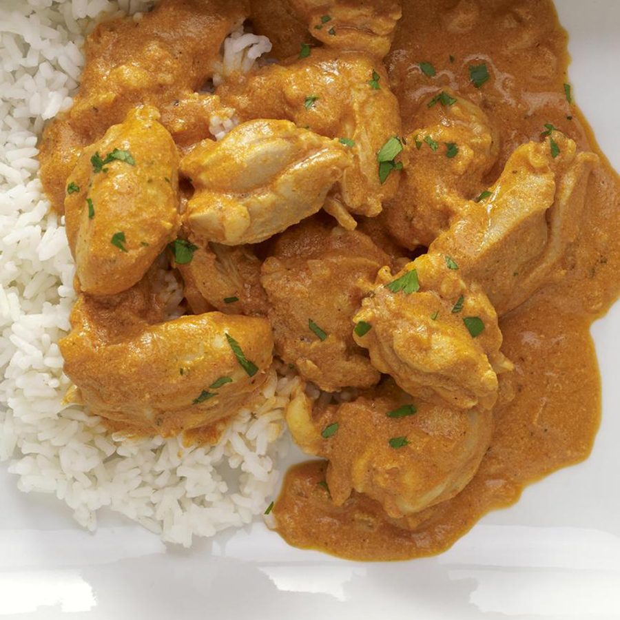

Butter Chicken Curry
- Thumb sized piece ginger
- One clove of garlic, grated
- 200g of chicken
- Coriander powder
- Cumin powder
- Turmeric powder
- 1/2 large onion
- 50g yogurt
- 50ml milk
- Tomato puree
- Olive oil

- Heat the pan and add the oil. Wait until the oil is hot, then add the chicken.
- After the chicken browns on both sides, add the diced onion
- After sweating the onions for a few minutes, add the powdered spice
- Add the ginger and garlic and sautee for few minutes
- Add tomato puree and cook for 10 minutes
- Add yogurt and milk and cook for a further 15 miuntes
- Taste for salt and add as necessary